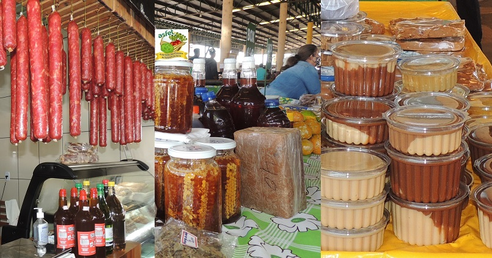
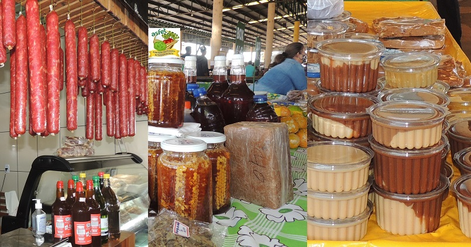
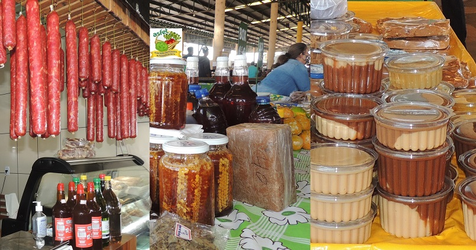

Um espaço para celebrar a união, diversidade e cooperação entre os mundos urbano e rural
Sobre o Evento
O evento "Festejando a Conexão: Campo e Cidade" visa fortalecer os laços entre os modos de vida rural e urbano por meio de atividades culturais, educativas e interativas.
Data: 10 a 12 de junho Local: Parque Central da Cidade Entrada: Gratuita Organização: Secretaria de Cultura e Desenvolvimento Rural
Por que essa conexão é importante?
Preservação cultural: Manter vivas as tradições do campo e compartilhar com novas gerações urbanas.
Segurança alimentar: Fortalecer circuitos curtos de produção e consumo.
Resiliência urbana: Incentivar práticas sustentáveis inspiradas no campo, como hortas comunitárias e compostagem.
Equidade: Combater a desigualdade entre os dois territórios por meio do conhecimento e do acesso a políticas públicas.
Atividades do Evento
Durante os três dias do evento, diversas atividades estarão disponíveis:
Feira de Produtos da Agricultura Familiar
Oficinas de Compostagem e Hortas Urbanas
Apresentações culturais: moda de viola, catira, forró
Rodas de conversa com agricultores e urbanistas
Espaço Kids com brincadeiras típicas do interior
Degustação de pratos típicos e produtos coloniais
Mini-fazenda com animais e plantio para crianças
Galeria de Imagens

Vídeos em Destaque
Confira alguns vídeos sobre experiências e histórias inspiradoras dessa conexão:
Curiosidades sobre Campo e Cidade
Mais de 70% dos alimentos consumidos nas cidades brasileiras vêm da agricultura familiar.
A urbanização acelerada está fazendo com que muitas cidades incentivem hortas comunitárias.
No campo, novas tecnologias como drones e sensores estão sendo usados para aumentar a produtividade.
O intercâmbio entre escolas rurais e urbanas tem promovido mais empatia entre os estudantes.
 
